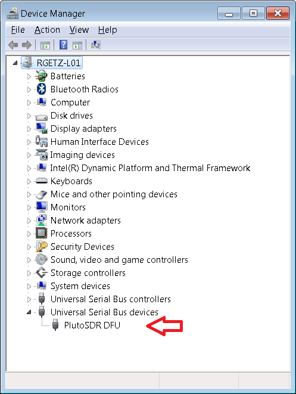
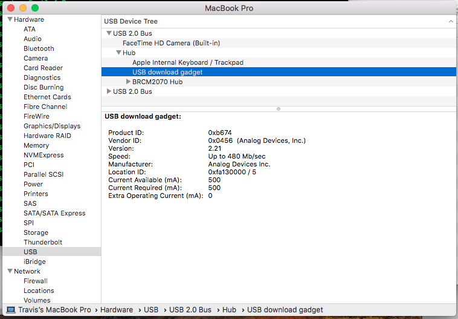

Firmware Updates
Latest Release
Download ADI default firmware images
This zip file should include these files:
Filename |
Purpose |
|---|---|
|
DFU file for First Stage Boot Loader, and U-Boot |
|
Firmware file for First Stage Boot Loader, U-Boot and it’s default environment |
|
DFU file for Pluto Firmware, this would include FPGA Bit File, Linux kernel (all drivers), and ram based file system |
|
DFU file for M2k Firmware, this would include FPGA Bit File, Linux kernel (all drivers), and ram based file system |
|
Firmware file for Pluto Firmware, this would include FPGA Bit File, Linux kernel (all drivers), and ram based file system |
|
Firmware file for M2k Firmware, this would include FPGA Bit File, Linux kernel (all drivers), and ram based file system |
|
DFU file which includes the default U-Boot environment |
Determining the firmware version
Important
This assumes that you have USB plugged into the middle connector, as described at the hardware section and have Windows drivers or Mac drivers installed.
Before you update, check your existing version to understand if you really want to upgrade. There are a few ways to determine the version of firmware on your device.
Host Command Line
Use your favourite shell to access iio_attr, and ask the device:
~$
iio_attr -a -C fw_version
Using auto-detected IIO context at URI "usb:4.25.5"
fw_version: v0.31
The version on this devices is 0.31.
Log In via ssh
SSH to the device. In the splash screen it will tell you…
If you can’t remember the username/password, if it is the default, it will be on
the mass storage device info.html page, under “Build Settings”. By default,
it is username: root ; password is analog.
~$
ssh root@192.168.2.1
Warning: Permanently added '192.168.2.1' (ECDSA) to the list of known hosts.
root@192.168.2.1's password: analog
Welcome to:
______ _ _ _________________
| ___ \ | | | / ___| _ \ ___ \
| |_/ / |_ _| |_ ___ \ `--.| | | | |_/ /
| __/| | | | | __/ _ \ `--. \ | | | /
| | | | |_| | || (_) /\__/ / |/ /| |\ \
\_| |_|\__,_|\__\___/\____/|___/ \_| \_|
v0.31
http://wiki.analog.com/university/tools/pluto%%
~$
The version on this devices is 0.31
Check the mass storage device
If you are less keyboard prone, then you can check visually, as well.
Open the PlutoSDR mass storage device or M2K mass storage device. This
will have a file called info.html. Double clicking on this file should open
it in your favourite browser, clicking on the firmware tag in the top should
take you down to a section that looks like this:
{kind=link}
The version on this devices is 0.31
Pluto rev C/D
All the above methods will work on a the most recent revisions, but there are some additional methods that will only work on rev C or D.
This assumes that you have USB plugged into the far right “power” connector, as described at the hardware section. The 2nd USB connector (the one labeled with the AC adapter logo) is not only power for USB OTG, but also a USB console. This means you can do things without using SSH, although you will need some sort of terminal application for your computer.
If you see don’t see anything - that may be normal until you say hello, with the
return key. Then you should see either the pluto> prompt (if you are in
U-Boot); or a prompt for username/password (if you are booted into Linux).
then just follow the instructions above.
Upgrading
The easiest way to update the firmware is to use the mass storage device included in the default image. There are times when this might not be possible (when you aren’t using the default image, or if you accidentally bricked your device by unplugging it during a firmware upgrade).
Important
There are very legitimate Security Risks about loading random firmware images onto devices like the ADALM-PLUTO or ADALM2000, however, we decided early on that a learning tool must be open and accessible for people to experiment on. Please only use firmware images you have received from trusted locations.
Mass Storage Update
Copy the pluto.frm or m2k.frm file onto the mass storage device, and
then eject it. If you have a Rev.C Pluto, copy the entire unzipped
plutosdr-fw-v0.33.zip file. LED1 will start blinking rapidly.
Caution
Don’t disconnect the device until rapid blinking stops!
Windows/OSX
Open the Pluto or M2k mass storage device
Download and open the firmware file
Copy the file to the Mass Storage device:
Eject (don’t unplug) the mass storage device
This will cause
LED1to blink rapidly. This means programming is taking place. Do not remove power (or USB) while the device is blinking rapidly. It does take approximately 4 minutes to properly program the device.Still do not unplug things. Try to be more patient.
Once the device is done programming, it will re-appear as a mass storage device.
Now you can unplug it, and use it as normal.
{kind=link}
{kind=link}
{kind=link}
{kind=link}
Linux
GUI
Command Line
It’s exactly the same as the GUI instructions, copy it, and then eject it, then
power cycle it. It’s a little more tricky since eject needs the base device
(it wants /dev/sdb not /dev/sdb1).
~/pluto$
cp ./pluto.frm /media/analog/PlutoSDR/
~/pluto$
mount | grep PlutoSDR | awk '{print $1}'
/dev/sdb1
~/pluto$
sudo eject /dev/sdb
#WAIT 4 minutes for firmware to update! Do not unplug the device.
Network Update
Many people remotely deploy their PlutoSDR, (via a USB <-> Ethernet dongle), and
need to maintain their system over the network. To do that get the pluto.frm
file or the boot.frm file from the release zip file on the device and
install that with the update_frm.sh utility which is found on release since
2018 (v0.29)
$
ssh root@pluto.local
root@192.168.1.104's password: **analog**
Welcome to:
______ _ _ _________________
| ___ \ | | | / ___| _ \ ___ \
| |_/ / |_ _| |_ ___ \ `--.| | | | |_/ /
| __/| | | | | __/ _ \ `--. \ | | | /
| | | | |_| | || (_) /\__/ / |/ /| |\ \
\_| |_|\__,_|\__\___/\____/|___/ \_| \_|
v0.33
https://wiki.analog.com/university/tools/pluto%%
$
wget https://api.github.com/repos/analogdevicesinc/plutosdr-fw/releases/latest
Connecting to api.github.com (140.82.114.5:80)
Connecting to api.github.com (140.82.114.5:443)
wget: note: TLS certificate validation not implemented
saving to 'latest'
latest 100% |* * * * * *| 9728 0:00:00 ETA
'latest' saved
$
grep "browser_download_url.*plutosdr-fw-" latest | cut -d : -f 2,3 | awk '{print $1}' | tr -d \"
https://github.com/analogdevicesinc/plutosdr-fw/releases/download/v0.34/plutosdr-fw-v0.34.zip
$
wget https://github.com/analogdevicesinc/plutosdr-fw/releases/download/v0.34/plutosdr-fw-v0.34.zip
Connecting to github.com (140.82.114.3:443)
wget: note: TLS certificate validation not implemented
Connecting to objects.githubusercontent.com (185.199.109.133:443)
saving to 'plutosdr-fw-v0.34.zip'
plutosdr-fw-v0.34.zip 100% |* * * * * * * * *| 19.2M 0:00:00 ETA
'plutosdr-fw-v0.34.zip' saved
$
unzip -l plutosdr-fw-v0.34.zip
Archive: plutosdr-fw-v0.34.zip
Length Date Time Name
--------- ---------- ----- ----
10580851 08-20-2021 14:13 pluto.dfu
131088 08-20-2021 14:13 uboot-env.dfu
10580868 08-20-2021 14:13 pluto.frm
469532 08-20-2021 14:13 boot.dfu
601645 08-20-2021 14:13 boot.frm
-------- -------
22363984 5 files
$
unzip plutosdr-fw-v0.34.zip pluto.frm
Archive: plutosdr-fw-v0.34.zip
inflating: pluto.frm
$
update_frm.sh ./pluto.frm
161+1 records in
161+1 records out
Done
$
reboot
DFU Update
USB Device Firmware Upgrade (DFU) is an official USB device class specification of the USB Implementers Forum. It specifies a vendor and device independent way of updating the firmware of a USB device. The concept is to have only one vendor-independent update tool as part of the operating system, which can then (given a particular firmware image) be downloaded into the device. During the firmware upgrade operation (when the Pluto or M2k is in “DFU” mode), the device changes its operating mode (it’s no longer an SDR or an instrument, no longer uses it’s standard PID/VID, but becomes a flash programmer).
This should only be necessary to recover your device if something accidentally happened during a firmware update (like having loose USB plugs, or bad USB cables, which cause a power cycle during a normal firmware update.)
Entering DFU mode
How to manually enter DFU mode?
In general, the preferred firmware upgrade is via the mass storage device. There are 3 ways to enter the DFU mode manually:
Press the device button with a toothpick, paper-clip or similar and then apply power by plugging in the USB cable.
From the device linux console type device_reboot sf. There are three ways to access the linux console:
The USB console USB CDC ACM aka. ttyACM0 using putty, minicom, tera Term, etc.
The UART console using ADALM-JTAGUART.
The network console using ssh/slogin.
Directly from u-boot serial console type: run dfu_sf. Access to the uboot command console is only available using ADALM-JTAGUART
When does the device automatically enter DFU mode?
The device enters DFU mode in case booting the multi component FIT image (Flattened Image Tree) fails. This may happen due to checksum failure caused by a corrupted previous firmware update.
How can I check if the device is in DFU mode?
When the device is in DFU mode, the DONE LED is OFF, while LED1 is constantly ON. The device switches it’s USB PID to 0xB674 (PlutoSDR DFU)
Windows
Check with Device Manager, and see if the DFU mode shows up.
{kind=link}
on Linux
0456 is the Analog Devices Vendor ID (VID), by using using lsusb, you
can check the mode. In normal use mode, the PlutoSDR will show up as Product ID
(PID) b673:
~$
lsusb | grep 0456
Bus 003 Device 008: ID 0456:b673 Analog Devices, Inc.
And in DFU mode:
~$
lsusb | grep 0456
Bus 003 Device 009: ID 0456:b674 Analog Devices, Inc.
On MAC
Check on
{kind=link}
Update using DFU mode
How to update the firmware using DFU mode? How to rewrite the default uboot environment?
Windows
The PlutoSDR/M2K driver package bundles also a dfu utility. There is a windows command console batch script called UPDATE.BAT which eases the update procedure.
Download and save UPDATE.BAT
Download and unzip the latest PlutoSDR respectively M2k release
Open a windows command prompt
Execute UPDATE.BAT with the path to the pluto.dfu or m2k.dfu file. (In case you need to rewrite the default uboot environment the use the uboot-env.dfu file)
Wait for the script to complete
C:\tmp>
UPDATE.BAT c:\tmp\pluto.dfu
dfu-util 0.9
Copyright 2005-2009 Weston Schmidt, Harald Welte and OpenMoko Inc.
Copyright 2010-2016 Tormod Volden and Stefan Schmidt
This program is Free Software and has ABSOLUTELY NO WARRANTY
Please report bugs to http://sourceforge.net/p/dfu-util/tickets/
Opening DFU capable USB device...
ID 0456:b674
Run-time device DFU version 0110
Claiming USB DFU Interface...
Setting Alternate Setting #1 ...
Determining device status: state = dfuIDLE, status = 0
dfuIDLE, continuing
DFU mode device DFU version 0110
Device returned transfer size 4096
Copying data from PC to DFU device
Download [=========================] 100% 8694467 bytes
Download done.
state(7) = dfuMANIFEST, status(0) = No error condition is present
state(2) = dfuIDLE, status(0) = No error condition is present
Done!
C:\tmp>
Linux
~$
sudo dfu-util -a firmware.dfu -D pluto.dfu
pluto.dfu is your firmware file in the dfu format.
OSX
dfu-util does not come with a default OSX install. You can install it with
brew as:
~$
brew install dfu-util
Updating the firmware is the same as Linux:
~$
dfu-util -a firmware.dfu -D pluto.dfu
pluto.dfu is your firmware file in the dfu format.
Debugging DFU
If those instructions didn’t help - you might get here. Hopefully this will help describe things.
The first thing to try is to make sure the device (Pluto or M2k) is actually in DFU mode. This is accomplished by asking the dfu utilities to list any devices that it finds, their configuration, interface and altsetting.
<WRAP info> Although these examples are on a Linux machine, on Windows, it is
similar. When you installed the Pluto or M2k Windows Drivers, it put the
dfu-utils on your hard drive (that’s why you accepted the GPL when you
installed the Windows license). However, for many these are not on path. It’s
easy to go to this directory, and run things from there. For example:
C:\>
cd 'c:\Program Files\Analog Devices\PlutoSDR-M2K'
C:\Program Files\Analog Devices\PlutoSDR-M2K>
dfu-util.exe -l
dfu-util 0.9
Copyright 2005-2009 Weston Schmidt, Harald Welte and OpenMoko Inc.
Copyright 2010-2016 Tormod Volden and Stefan Schmidt
This program is Free Software and has ABSOLUTELY NO WARRANTY
Please report bugs to http://sourceforge.net/p/dfu-util/tickets/
Found DFU: [0456:b674] ver=0221, devnum=7, cfg=1, intf=0, path="1-1", alt=4, name="spare.dfu", serial="UNKNOWN"
Found DFU: [0456:b674] ver=0221, devnum=7, cfg=1, intf=0, path="1-1", alt=3, name="uboot-env.dfu", serial="UNKNOWN"
Found DFU: [0456:b674] ver=0221, devnum=7, cfg=1, intf=0, path="1-1", alt=2, name="uboot-extra-env.dfu", serial="UNKNOWN"
Found DFU: [0456:b674] ver=0221, devnum=7, cfg=1, intf=0, path="1-1", alt=1, name="firmware.dfu", serial="UNKNOWN"
Found DFU: [0456:b674] ver=0221, devnum=7, cfg=1, intf=0, path="1-1", alt=0, name="boot.dfu", serial="UNKNOWN"
Just don’t type in the sudo that is necessary on Linux.
Here it found one device, with 5 “partitions” in the flash map.
~$
sudo dfu-util --list
[sudo] password for rgetz:
dfu-util 0.9
Copyright 2005-2009 Weston Schmidt, Harald Welte and OpenMoko Inc.
Copyright 2010-2016 Tormod Volden and Stefan Schmidt
This program is Free Software and has ABSOLUTELY NO WARRANTY
Please report bugs to %%http://sourceforge.net/p/dfu-util/tickets/%%
Found DFU: [0456:b674] ver=0221, devnum=104, cfg=1, intf=0, path="3-1.6.6", alt=4, name="spare.dfu", serial="UNKNOWN"
Found DFU: [0456:b674] ver=0221, devnum=104, cfg=1, intf=0, path="3-1.6.6", alt=3, name="uboot-env.dfu", serial="UNKNOWN"
Found DFU: [0456:b674] ver=0221, devnum=104, cfg=1, intf=0, path="3-1.6.6", alt=2, name="uboot-extra-env.dfu", serial="UNKNOWN"
Found DFU: [0456:b674] ver=0221, devnum=104, cfg=1, intf=0, path="3-1.6.6", alt=1, name="firmware.dfu", serial="UNKNOWN"
Found DFU: [0456:b674] ver=0221, devnum=104, cfg=1, intf=0, path="3-1.6.6", alt=0, name="boot.dfu", serial="UNKNOWN"
If this doesn’t show up, try again. dfu-utils is known to work better the
2nd time.
When the system boots, it follows this basic process:
the U-Boot (
bootsection) will load,U-Boot will load it’s environment (both the
uboot-envanduboot-extra-envsections),U-Boot will then use that to load the kernel and ramfs (the
firmwaresection).
Note
dfu-util - a short dfu primer DFU has lots of options, the ones to remember are:
-lList the currently attached DFU capable USB devices-a <altsetting>Specify the Altseting of the DFU Interface-D <fileWrite firmware from <file> into device-U <file>Read firmware from device into <file>-RIssue USB reset signalling after upload or download has finished.
The file releases always include:
boot.dfupluto.dfuuboot-env.dfu
And corruption of those sections can cause problems in the booting process. In order, try writing the:
firmware section:
~$
sudo dfu-util -a firmware.dfu -D ./pluto.dfu
dfu-util 0.9 Copyright 2005-2009 Weston Schmidt, Harald Welte and OpenMoko Inc. Copyright 2010-2016 Tormod Volden and Stefan Schmidt This program is Free Software and has ABSOLUTELY NO WARRANTY Please report bugs to %%http://sourceforge.net/p/dfu-util/tickets/%% Match vendor ID from file: 0456 Match product ID from file: b673 Opening DFU capable USB device... ID 0456:b674 Run-time device DFU version 0110 Claiming USB DFU Interface... Setting Alternate Setting #1 ... Determining device status: state = dfuIDLE, status = 0 dfuIDLE, continuing DFU mode device DFU version 0110 Device returned transfer size 4096 Copying data from PC to DFU device Download [=========================] 100% 10623523 bytes Download done. state(7) = dfuMANIFEST, status(0) = No error condition is present state(2) = dfuIDLE, status(0) = No error condition is present Done!
The U-Boot section:
~$
sudo dfu-util -a boot.dfu -D ./boot.dfu
dfu-util 0.9 Copyright 2005-2009 Weston Schmidt, Harald Welte and OpenMoko Inc. Copyright 2010-2016 Tormod Volden and Stefan Schmidt This program is Free Software and has ABSOLUTELY NO WARRANTY Please report bugs to %%http://sourceforge.net/p/dfu-util/tickets/%% Match vendor ID from file: 0456 Match product ID from file: b673 Opening DFU capable USB device... ID 0456:b674 Run-time device DFU version 0110 Claiming USB DFU Interface... Setting Alternate Setting #0 ... Determining device status: state = dfuIDLE, status = 0 dfuIDLE, continuing DFU mode device DFU version 0110 Device returned transfer size 4096 Copying data from PC to DFU device Download [=========================] 100% 469388 bytes Download done. state(7) = dfuMANIFEST, status(0) = No error condition is present state(2) = dfuIDLE, status(0) = No error condition is present Done!
the U-Boot environment :
~$
sudo dfu-util -a uboot-env.dfu -D ./uboot-env.dfu
dfu-util 0.9 Copyright 2005-2009 Weston Schmidt, Harald Welte and OpenMoko Inc. Copyright 2010-2016 Tormod Volden and Stefan Schmidt This program is Free Software and has ABSOLUTELY NO WARRANTY Please report bugs to %%http://sourceforge.net/p/dfu-util/tickets/%% Match vendor ID from file: 0456 Match product ID from file: b673 Opening DFU capable USB device... ID 0456:b674 Run-time device DFU version 0110 Claiming USB DFU Interface... Setting Alternate Setting #3 ... Determining device status: state = dfuIDLE, status = 0 dfuIDLE, continuing DFU mode device DFU version 0110 Device returned transfer size 4096 Copying data from PC to DFU device Download [=========================] 100% 131072 bytes Download done. state(7) = dfuMANIFEST, status(0) = No error condition is present state(2) = dfuIDLE, status(0) = No error condition is present Done!
the
uboot-extra-env.dfu. This is rarely needed to be changed. This is where things like factory calibration and ppm offset are stored. A good idea is just to check it:~$
sudo dfu-util -a uboot-extra-env.dfu -U ./uboot-extra-env.dfu
dfu-util 0.9 Copyright 2005-2009 Weston Schmidt, Harald Welte and OpenMoko Inc. Copyright 2010-2016 Tormod Volden and Stefan Schmidt This program is Free Software and has ABSOLUTELY NO WARRANTY Please report bugs to %%http://sourceforge.net/p/dfu-util/tickets/%% Opening DFU capable USB device... ID 0456:b674 Run-time device DFU version 0110 Claiming USB DFU Interface... Setting Alternate Setting #2 ... Determining device status: state = dfuIDLE, status = 0 dfuIDLE, continuing DFU mode device DFU version 0110 Device returned transfer size 4096 Copying data from DFU device to PC Upload [=========================] 100% 4096 bytes Upload done.
This will upload things from the device to your PC. It can be checked with
hexdump.~/Downloads/pluto2$
hexdump -C ./uboot-extra-env.dfu
00000000 ff ff ff ff ff ff ff ff ff ff ff ff ff ff ff ff |................| 00001000
Here we can see this is blank (all
0xFF), meaning that no custom calibration data is currently used on this device. This is common for early models. If you need to clear it, just make a file that starts with0xFF, and write it. Note that this section of flash is protected. Therefore, the flash must be unlocked if you want to overwrite this partition. The U-Boot environment sections are protected with a CRC32, so if something has become corrupt, it will be skipped. Even if this partition is bad and CRC32 passes, only the xo_correction is used and itself will fail gracefully if wrong values provided.The last time your access things, you can tell the device to reset with the
-Roption.~$
sudo dfu-util -R -a uboot-extra-env.dfu -U ./uboot-extra-env.dfu
dfu-util 0.9 Copyright 2005-2009 Weston Schmidt, Harald Welte and OpenMoko Inc. Copyright 2010-2016 Tormod Volden and Stefan Schmidt This program is Free Software and has ABSOLUTELY NO WARRANTY Please report bugs to %%http://sourceforge.net/p/dfu-util/tickets/%% Opening DFU capable USB device... ID 0456:b674 Run-time device DFU version 0110 Claiming USB DFU Interface... Setting Alternate Setting #2 ... Determining device status: state = dfuIDLE, status = 0 dfuIDLE, continuing DFU mode device DFU version 0110 Device returned transfer size 4096 Copying data from DFU device to PC Upload [=========================] 100% 4096 bytes Upload done. Resetting USB to switch back to runtime mode
Release Notification
When a new release is made, you can be automatically notified if you are watching the release section on github. To do this, you need to be logged into github with a valid account (and have a valid email where you want notifications to show up). Then just go to the Scopy; M2k Firmware or PlutoSDR Firmware. Scopy has built in notification (it will tell you on startup if a new feature is available, but if you are a lab manager, and still want to be notified - the default github notifications are the best solution).
Click on the “Watch” button in the right hand side, then decide if you want to watch everything, or just releases (under Custom). (Click on the picture if you need it bigger).
{kind=link}
{kind=link}